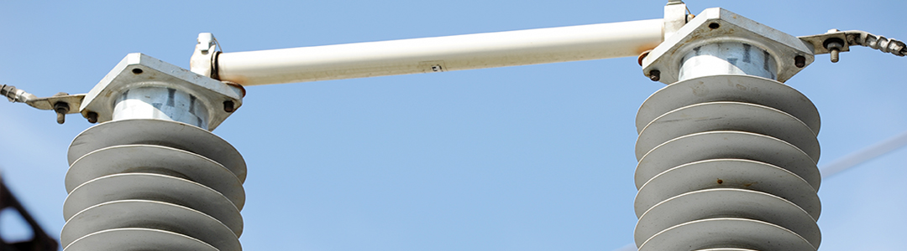
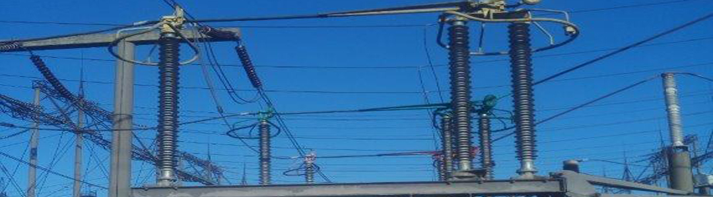

Опорні ізолятори ОСК 110 кВ
Ізолятори опорні стрижневі полімерні ОСК (альтернативні назви ИОСК, ИОС, ИО, ОНШ) на напругу 110 кВ. Порцелянові аналоги: ИОС-110, УСТ-110, АКО-110, ОНС-110, С4-450, С4-550, С6-480.





Ізолятори ОСК
Ізолятори опорні стрижневі полімерні ОСК (альтернативні назви ИОСК, ИОС, ИО, ОНШ) із суцільнолитою захисною оболонкою прийшли на зміну застарілим порцеляновим ізоляторам ИОС, УСТ, ОНШ, ИШТ, ОНС, АКО понад 12 років тому. Вони відрізняються вищими якісно-експлуатаційними характеристиками, надійністю, легкістю монтажу та обслуговування.
Ізолятори ОСК не потребують очищення ізоляційної оболонки. Завдяки малій вазі порівняно з порцеляновими аналогами їх можна монтувати без кранової техніки. Вони стійкі до вандалізму та до механічних впливів (дріб, осколки тощо).
ОСК повністю взаємозамінні з порцеляновими аналогами, тому заміну можна виконувати без зміни конструкції обладнання. Мала вага дозволяє заощаджувати на металоконструкціях при виробництві роз'єднувачів і при будівництві фундаментів підстанційного обладнання.
Опорні стрижневі ізолятори ОСК на напругу від 10 до 220 кВ понад 20 років експлуатуються на об'єктах ДТЭК Енерго, Укренерго, Укрзалізниці, а також у провідних обленерго України. Гарантійний строк експлуатації — від 5 до 10 років.
Виробнича база має власну електромеханічну лабораторію: кожен ізолятор проходить механічні та електричні випробування. Партнерами підприємства є провідні в Україні виробники арматури, тому можлива комплексна поставка необхідних матеріалів (затискачі, контактори тощо).
Моделі ОСК на 110 кВ
Моделей: 29. Для 5 із них доступні детальні технічні характеристики (назва моделі — посилання).
| Модель | Буд. висота, мм | Порцеляновий аналог | Варіанти позначення | Креслення |
|---|---|---|---|---|
| ОСК 4-110/480-2 | 1220 | — | — | OSK4-110-480-2.pdf |
| ОСК 10-110/450-2 | 1020±1 | С12.5-450 | ИОСК-6-110-1020-2, ОСК-10-110-А-4, ИОСК 10-110-1020-2, ОСК 10-110-А-2 УХЛ1 | 46.pdf |
| ОСК 10-110/450-2-01 | 1020±1 | — | ОСК 10-110-2А-02, ИОСК 16-110-1020-2, ОСК-10-110-А02-2 | 47.pdf |
| ОСК 10-110/450-2-02 | 1020±1 | ИОС-110/300-М УХЛ1, ИОС-110-300-М УХЛ1, ИОС110/300 М УХЛ1, ОИС-110-300 М УХЛ1 | ОСК 10-110-2А, ИОСК 16-110-1020-2 | 48.pdf |
| ОСК 10-110/450-2-03 | 1000±1 | — | — | OSK10-110-450-2-03.pdf |
| ОСК 10-110/450-2-05 | — | — | ОСК 10-110-А-2 | — |
| ОСК 10-110/480-2 | 1100±1 | ИОС-110/600 УХЛ1, ИОС-110-600 УХЛ1, ИОС110-600-I-М УХЛ1, ИОС110-600-II-М УХЛ1 та аналогічні написання | ОСК-10-110-В05-1 УХЛ1, ОСК 10-110-2В, ИОСК 12,5-110-1100-3, ОСК 10-110-В-2 УХЛ1, ОСК-10-110-В05-2, ОСК-10-110-В-4 УХЛ1 | 49-58.pdf |
| ОСК 10-110/480-2-01 | 1050±1 | УСТ-110, АКО-110 | ОСК-10-110-Б-02-2, ОСК 10-110-2Б, ИОСК 12,5-110-1050-3, ИОСК 110-110-1050-3, ИОСК 6-110-1100-1, ИОСК 6-110-1100-2 УХЛ1, ОТПК 10-110Б-2 УХЛ1 | OSK10-110-480-2-01.pdf |
| ОСК 10-110/480-2-02 | 1050±1 | УСТ-110, АКО-110, ИОСК 110 | ОСК 10-110-2Б, ИОСК 12,5-110-1050-3, ОСК 10-110-2Б-03, ОСК-10-110-Б-03-2 УХЛ1 | OSK10-110-480-2-02.pdf |
| ОСК 10-110/480-2-03 | 1050±1 | ИОС-110/400 УХЛ1, ИОС-110-400 УХЛ1, ИОС110-400-I-М УХЛ1, ИОС110-400-II-М УХЛ1 та аналогічні написання | ОСК 10-110-2Б, ОСК-10-110-Б01-2, ИОСК 12,5-110-1050-3, ИОСК 10-110-1050-3, ОСК 10-110-В-2 УХЛ1 | osk10-110-480-2-03.pdf |
| ОСК 10-110/480-2-04 | 1050±1 | С4-450-I-М УХЛ1, С4-450-II-М УХЛ1, СЧ-450-I-М УХЛ1, СЧ-450-II-М УХЛ1 та аналогічні написання | ОСК-10-110Б2 УХЛ1, ОСК 12,5-110-Б-2 УХЛ1, ОСК 10-110-2Б, ИОСК 12,5-110-1050-3, ИОСК 10-110-1050-3, ОСК-10-110-Б-01-2 УХЛ1 | OSK10-110-480-2-04.pdf |
| ОСК 10-110/480-2-07 | 1050±1 | С6-480-I, С6-480-II | ОСК-10-110-Г3, ИОСК 6-110-1050-1 | osk10-110-480-2-07.pdf |
| ОСК 10-110/480-2-08 | 1050±1 | — | ОСК-10-110-Б-09-2 УХЛ1, ОСК 10-110-2Б, ИОСК 12,5-110-1050-3 | OSK110H-1050.pdf |
| ОСК 10-110/480-2-09 | 1100±1 | ИОС110-1000 | — | 49-58.pdf OSK110H-1050.pdf |
| ОСК 10-110/480-2-012 | 1100±2 | — | ОСК-10-110-В-06-2 УХЛ1 | OSK10-110-480-2-012.pdf |
| ОСК 10-110/480-2-015 | 1050±1,5 | ОНС-110-1000 | — | OSK10-110-480-2-015.pdf |
| ОСК 10-110/480-2-016 | 1050±1 | УСТ-110 | — | OSK10-110-480-2-016.pdf |
| ОСК 10-110/480-2-017 | 1050±2 | — | ОСК-10-110-Б-08-2 УХЛ1 | OSK10-110-480-2-017.pdf |
| ОСК 10-110/550-2 | 1220±1 | С4-550-I-М УХЛ1, С4-550-II-М УХЛ1, С6-550-I-М УХЛ1, С6-550-II-М УХЛ1, С10-550, С10-550-I, С10-550-II та аналогічні написання | ОСК-10-110-Г-4 УХЛ1, ОСК 10-110-3Г, ИОСК 12,5-110-1220-3 | OSK10-110-550-2.pdf |
| ОСК 10-110/550-2-01 | 1220±1 | — | ОСК 10-110-Г-3 УХЛ1 | 59.pdf |
| ОСК 10-110/550-2-03 | 1220±1 | — | — | OSK10-110-550-2.pdf |
| ОСК 10-110/550-2-04 | 1220±1 | — | — | OSK10-110-550-2.pdf |
| ОСК 12,5-110/480-2 | 1100±1 | ИОС-110/1250 УХЛ1, ИОС-110-1250 УХЛ1, ИОС110-1250 УХЛ1, ИОС-110/1250-М УХЛ1 та аналогічні написання | ОСК-12,5-110-А-4 УХЛ1, ОСК 12,5-110-2В, ИОСК 12,5-110-1050-3 | 60.pdf |
| ОСК 12,5-110/480-2-01 | — | — | ОСК 10-110-Б-08-2 УХЛ1 | — |
| ОСК 12,5-110/480-2-02 | — | — | ОСК 12,5-110-В-02-2 | — |
| ОСК 12,5-110/480-2-05 | — | — | ОСК 10-110-2Б | — |
| ОСК 20-110/480-2 | 1100±1 | ИОС-110/2000-М УХЛ1, ИОС-110-2000-М УХЛ1, ИОС110/2000 М УХЛ1, ОИС-110-2000 М УХЛ1 | ОСК-20-110-Г-4 УХЛ1, ИОСПК-20-110/480 | 61.pdf |
| ОСК 20-110/480-2-01 | 1100±1 | ИОС-110-2000-01-М | — | OSK20-110-480-2-01.pdf |
| ОСК 20-110/550-2 | 1220±1 | — | — | 62.pdf |
Будівельна висота та інші розміри можуть уточнюватися за кресленням. Якщо потрібної моделі немає у списку, зв'яжіться з нами — підберемо аналог.
Технічні характеристики моделей
Розкрийте потрібну модель, щоб побачити параметри.
ОСК 10-110/450-2-02 УХЛ1характеристики
Опорний стрижневий полімерний ізолятор для ізоляції та кріплення струмовідних частин в електричних апаратах, розподільчих установках електростанцій і підстанцій змінного струму. Робочий діапазон температур від −60 до +50 °C, висота встановлення не більше 1000 м над рівнем моря. Відповідає СОУ МПЕ 40.1.51.302:2006.
Замінює порцелянові: ИОС-110/300-М УХЛ1, ИОС-110-300-М УХЛ1, ИОС110/300 М УХЛ1, ОИС-110-300 М УХЛ1
Варіанти позначення полімерних аналогів: ОСК 10-110-2А, ИОСК 16-110-1020-2
| Показник | ОСК 10-110/450-2-02 |
|---|---|
| Номінальна напруга, кВ | 110 |
| Мін. руйнівна сила при вигині, кН | 10 |
| Ступінь забруднення атмосфери (ГОСТ 9920) | 2 |
| Грозовий імпульс 1,2/50, кВ | 450 |
| Промислова частота, кВ: у сухому стані | 230 |
| Промислова частота, кВ: під дощем | 230 |
| 50%-е розрядна напруга у забрудненому та зволоженому стані, кВ (питома провідність) | 110 (20 мкСм) |
| Мін. руйнівний крутний момент, кН·м | 2 |
| Довжина шляху витоку, мм | 2700 |
| Рівень часткових розрядів, пКл | ≤ 2 |
| Маса, кг, не більше | 26,2 |
| Кліматичне виконання (ГОСТ 15150) | УХЛ1 |
ОСК 10-110/480-2 УХЛ1характеристики
Опорний стрижневий полімерний ізолятор для ізоляції та кріплення струмовідних частин в електричних апаратах, розподільчих установках електростанцій і підстанцій змінного струму. Робочий діапазон температур від −60 до +50 °C, висота встановлення не більше 1000 м над рівнем моря. Відповідає СОУ МПЕ 40.1.51.302:2006.
Замінює порцелянові: ИОС-110/600 УХЛ1, ИОС-110-600 УХЛ1, ИОС110-600-I-М УХЛ1, ИОС110-600-II-М УХЛ1 та аналогічні написання
Варіанти позначення полімерних аналогів: ОСК-10-110-В05-1 УХЛ1, ОСК 10-110-2В, ИОСК 12,5-110-1100-3, ОСК 10-110-В-2 УХЛ1, ОСК-10-110-В05-2, ОСК-10-110-В-4 УХЛ1
| Показник | ОСК 10-110/480-2 |
|---|---|
| Номінальна напруга, кВ | 110 |
| Мін. руйнівна сила при вигині, кН | 10 |
| Ступінь забруднення атмосфери (ГОСТ 9920) | 2 |
| Грозовий імпульс 1,2/50, кВ | 480 |
| Промислова частота, кВ: у сухому стані | 230 |
| Промислова частота, кВ: під дощем | 230 |
| 50%-е розрядна напруга у забрудненому та зволоженому стані, кВ (питома провідність) | 110 (20 мкСм) |
| Мін. руйнівний крутний момент, кН·м | 2 |
| Довжина шляху витоку, мм | 3000 |
| Рівень часткових розрядів, пКл | ≤ 2 |
| Маса, кг, не більше | 27,8 |
| Кліматичне виконання (ГОСТ 15150) | УХЛ1 |
ОСК 10-110/480-2-03 УХЛ1характеристики
Опорний стрижневий полімерний ізолятор для ізоляції та кріплення струмовідних частин в електричних апаратах, розподільчих установках електростанцій і підстанцій змінного струму. Робочий діапазон температур від −60 до +50 °C, висота встановлення не більше 1000 м над рівнем моря. Відповідає СОУ МПЕ 40.1.51.302:2006.
Замінює порцелянові: ИОС-110/400 УХЛ1, ИОС-110-400 УХЛ1, ИОС110-400-I-М УХЛ1, ИОС110-400-II-М УХЛ1 та аналогічні написання
Варіанти позначення полімерних аналогів: ОСК 10-110-2Б, ОСК-10-110-Б01-2, ИОСК 12,5-110-1050-3, ИОСК 10-110-1050-3, ОСК 10-110-В-2 УХЛ1
| Показник | ОСК 10-110/480-2-03 |
|---|---|
| Номінальна напруга, кВ | 110 |
| Мін. руйнівна сила при вигині, кН | 10 |
| Ступінь забруднення атмосфери (ГОСТ 9920) | 2 |
| Грозовий імпульс 1,2/50, кВ | 480 |
| Промислова частота, кВ: у сухому стані | 230 |
| Промислова частота, кВ: під дощем | 230 |
| 50%-е розрядна напруга у забрудненому та зволоженому стані, кВ (питома провідність) | 110 (20 мкСм) |
| Мін. руйнівний крутний момент, кН·м | 2 |
| Довжина шляху витоку, мм | 2800 |
| Рівень часткових розрядів, пКл | ≤ 2 |
| Маса, кг, не більше | 26,8 |
| Кліматичне виконання (ГОСТ 15150) | УХЛ1 |
ОСК 10-110/480-2-04 УХЛ1характеристики
Опорний стрижневий полімерний ізолятор для ізоляції та кріплення струмовідних частин в електричних апаратах, розподільчих установках електростанцій і підстанцій змінного струму. Робочий діапазон температур від −60 до +50 °C, висота встановлення не більше 1000 м над рівнем моря. Відповідає СОУ МПЕ 40.1.51.302:2006.
Замінює порцелянові: С4-450-I-М УХЛ1, С4-450-II-М УХЛ1, СЧ-450-I-М УХЛ1, СЧ-450-II-М УХЛ1 та аналогічні написання
Варіанти позначення полімерних аналогів: ОСК-10-110Б2 УХЛ1, ОСК 12,5-110-Б-2 УХЛ1, ОСК 10-110-2Б, ИОСК 12,5-110-1050-3, ИОСК 10-110-1050-3, ОСК-10-110-Б-01-2 УХЛ1
| Показник | ОСК 10-110/480-2-04 |
|---|---|
| Номінальна напруга, кВ | 110 |
| Мін. руйнівна сила при вигині, кН | 10 |
| Ступінь забруднення атмосфери (ГОСТ 9920) | 2 |
| Грозовий імпульс 1,2/50, кВ | 480 |
| Промислова частота, кВ: у сухому стані | 230 |
| Промислова частота, кВ: під дощем | 230 |
| 50%-е розрядна напруга у забрудненому та зволоженому стані, кВ (питома провідність) | 110 (20 мкСм) |
| Мін. руйнівний крутний момент, кН·м | 2 |
| Довжина шляху витоку, мм | 2900 |
| Рівень часткових розрядів, пКл | ≤ 2 |
| Маса, кг, не більше | 26,8 |
| Кліматичне виконання (ГОСТ 15150) | УХЛ1 |
ОСК 12,5-110/480-2 УХЛ1характеристики
Опорний стрижневий полімерний ізолятор для ізоляції та кріплення струмовідних частин в електричних апаратах, розподільчих установках електростанцій і підстанцій змінного струму. Робочий діапазон температур від −60 до +50 °C, висота встановлення не більше 1000 м над рівнем моря. Відповідає СОУ МПЕ 40.1.51.302:2006.
Замінює порцелянові: ИОС-110/1250 УХЛ1, ИОС-110-1250 УХЛ1, ИОС110-1250 УХЛ1, ИОС-110/1250-М УХЛ1 та аналогічні написання
Варіанти позначення полімерних аналогів: ОСК-12,5-110-А-4 УХЛ1, ОСК 12,5-110-2В, ИОСК 12,5-110-1050-3
| Показник | ОСК 12,5-110/480-2 |
|---|---|
| Номінальна напруга, кВ | 110 |
| Мін. руйнівна сила при вигині, кН | 12,5 |
| Ступінь забруднення атмосфери (ГОСТ 9920) | 2 |
| Грозовий імпульс 1,2/50, кВ | 480 |
| Промислова частота, кВ: у сухому стані | 230 |
| Промислова частота, кВ: під дощем | 230 |
| 50%-е розрядна напруга у забрудненому та зволоженому стані, кВ (питома провідність) | 110 (20 мкСм) |
| Мін. руйнівний крутний момент, кН·м | 2 |
| Довжина шляху витоку, мм | 3000 |
| Рівень часткових розрядів, пКл | ≤ 2 |
| Маса, кг, не більше | 29,1 |
| Кліматичне виконання (ГОСТ 15150) | УХЛ1 |
Альтернативні назви
Так ці ізолятори можуть бути позначені в інших каталогах і специфікаціях. Якщо не знайшли потрібний аналог, зв'яжіться з нами — ми підберемо його.
Потрібен підбір або ціна заводу?
Мінімальне замовлення — від 1 штуки. Доставка будь-яким зручним перевізником. Підберемо ізолятор під заміну порцелянових.